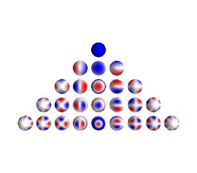

Note
Click here to download the full example code
Example of spherical harmonics tools and visualization¶
import numpy as np
from mayavi import mlab
import matplotlib.pyplot as plt
from bfieldtools.sphtools import SphBasis
from bfieldtools import sphtools
# Create basis object for evaluation of inner products etc.
sph = SphBasis(20)
mlab.figure()
obj = sphtools.plotYlms(sph, 4)
# l=3, m=3
mlab.figure()
obj = sphtools.plotYlm(sph, 3, 3)
- 

# Needs fixing: Plot sphere here
# TODO: mesh info in sph (faces are missing!)
offset = np.array((0, 0, 2))
mlab.figure()
obj = sphtools.plotBVlm_volume(sph, 5, 0, 1, 10, offset)
mlab.figure()
obj = sphtools.plotBWlm_volume(sph, 5, 0, 1, 10, offset)


Vlm1 = sphtools.Wlm(1, 0, sph.sqp[:, 1], sph.sqp[:, 2])
Vlm2 = sphtools.Wlm(7, 0, sph.sqp[:, 1], sph.sqp[:, 2])
print(sph.innerproduct(Vlm1, Vlm2))
Wlm1 = sphtools.Wlm(1, 0, sph.sqp[:, 1], sph.sqp[:, 2])
Wlm2 = sphtools.Wlm(7, 0, sph.sqp[:, 1], sph.sqp[:, 2])
print(sph.innerproduct(Wlm2, Wlm2))
Out:
7.084732886580034e-17
0.9999999999999999
B = np.zeros(sph.sqp.shape)
# B[:,0] = 1
B[:, 2] = sph.qp.points[:, 0] / np.max(sph.qp.points[:, 0])
B += 0.1 * np.random.randn(B.shape[0], B.shape[1])
B = sphtools.cartvec2sph(sph.sqp, B)
coeffs = sph.avsphspectra(B, 7) # OK??
plt.figure()
plt.semilogy(coeffs ** 2)
# obj = sphtools.plotYlm(sph, 5, 3)

Out:
[<matplotlib.lines.Line2D object at 0x7f969e712a50>]
Np = 10
lim = 3
x, y, z = np.meshgrid(
np.linspace(-lim, lim, Np), np.linspace(-lim, lim, Np), np.linspace(-lim, lim, Np)
)
# p = np.array((x.flatten(), y.flatten(), z.flatten())).T
p = np.array((x.flatten(), y.flatten(), np.zeros(y.flatten().shape))).T
lmax = 2
acoeffs = np.zeros(lmax * (lmax + 2))
bcoeffs = np.zeros(lmax * (lmax + 2))
acoeffs[7] = 1
# bcoeffs[2] = 1
pot = sphtools.potential(p, acoeffs, bcoeffs, lmax)
pot = np.reshape(pot, x.shape)
mlab.figure()
mlab.mesh(x[:, :, 0], y[:, :, 0], z[:, :, 0], scalars=pot[:, :, 0], colormap="Spectral")
# #%% Fit spectrum to random data
# coords = np.zeros((p.shape[0], p.shape[1], 3))
# coords[:, :, 0] = p
# coords[:, :, 1] = p
# coords[:, :, 2] = p
# B = np.zeros((coords.shape[0], coords.shape[1]))
# B[:, 2] = p[:, 0] / np.max(p[:, 0])
# B[:, 1] = 0.3
# B += 0.4 * np.random.randn(B.shape[0], B.shape[1])
# lmax = 5
# coeffs, coeffs2, mse = sphtools.fit_spectra(coords, B, lmax)
# plt.figure()
# plt.semilogy(coeffs ** 2, ".")

Out:
<mayavi.modules.surface.Surface object at 0x7f969e07cd10>
Total running time of the script: ( 0 minutes 4.359 seconds)